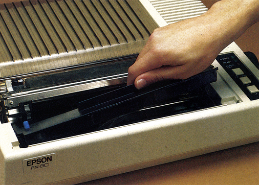
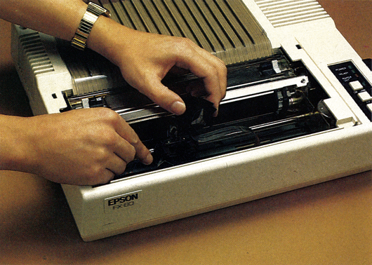
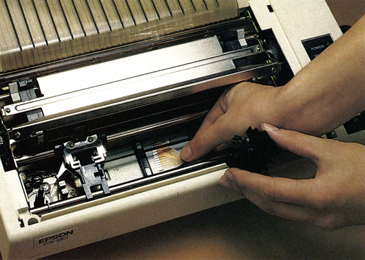
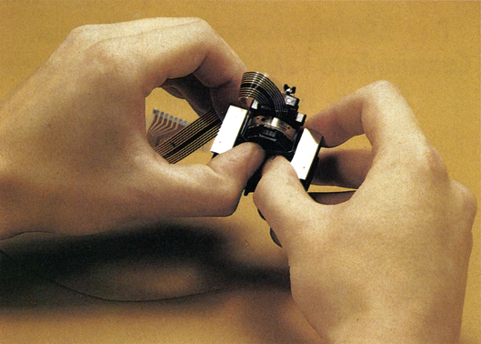
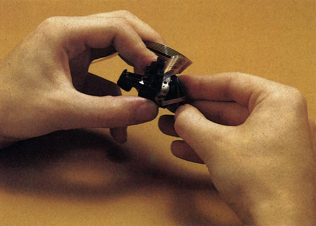
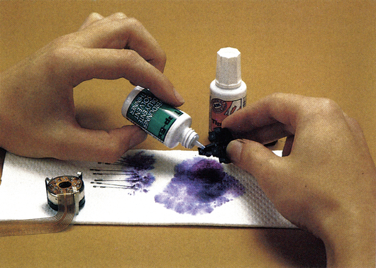
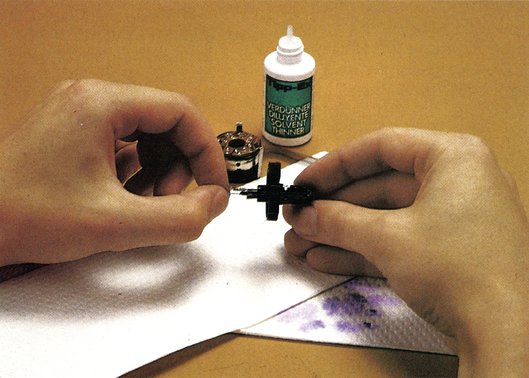
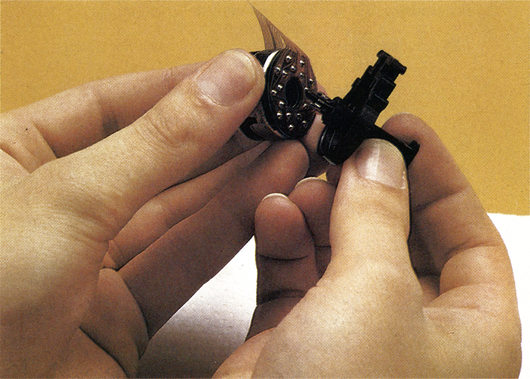

Die Axt im Haus... (Teil 7)
Durch Verschmutzung des Druckkopfes läßt die Druckqualität bei Epson-FX-Druckern im Laufe der Zeit nach. Wie Sie den Kopf wieder säubern und das Druckbild verbessern können, erfahren Sie hier.
Dieser Teil des Kurses gibt Hilfestellung für die Besitzer von Epson-Druckern. Es wird gezeigt, wie man den Druckkopf zerlegt, um die Mechanik zu reinigen oder defekte Nadeln auszutauschen. Diese Inspektions- und Reinigungstätigkeit sollte ab und zu vollzogen werden, damit die Druckqualität nicht nachläßt.
Mit der Zeit verschmutzt nämlich die Führung der Nadeln im Druckkopf, so daß durch Farbrückstände bedingt, die Nadeln nicht mehr so recht aufs Papier und Farbband schlagen wollen. Dann ist es an der Zeit, den Druckkopf zu zerlegen und alle Teile von den Farbablagerungen zu befreien. Diese Arbeit läßt sich auch mit »Heimwerkermitteln« leicht selbst durchführen. Als Arbeitsutensilien benötigen Sie saugfähige Tücher, Tipp-Ex-Verdünner oder Isopropyl-Alkohol (erhältlich in jeder Apotheke) und etwas Tipp-Ex oder Farbe zum Markieren eines Bauteils. Bevor Sie aber den Kopf zerlegen, lesen Sie bitte zuerst diese Anleitung ganz durch!
Trennen Sie Ihren Drucker vom Stromnetz und nehmen die Abdeckung über dem Druckkopf ab. Anschließend ist die Farbbandkassette, wie im Drucker-Handbuch beschrieben, zu entnehmen (Bild 1).

Damit haben Sie freien Zugang zum Druckkopf. Um ihn auszubauen, lösen Sie, wie im Druckerhandbuch beschrieben, die Verriegelung und nehmen den Kopf heraus (Bild 2). Dazu gleich ein kleiner Tip: Bei älteren Geräten oder solchen, bei denen der Kopf schon öfter ausgebaut wurde, kann es sein, daß die Verriegelung nicht mehr faßt. In diesem Fall kann es helfen, das Blech der Verriegelung und die Feder, auf der der Kopf aufliegt, nach unten beziehungsweise oben zu verbiegen, bis der Kopf wieder fest einrastet. Als dritten Schritt ist das Kabel, das den Kopf mit dem Drucker-Gehäuse verbindet, herauszuziehen. Dazu nimmt man den verstärkten Teil des flexiblen Kabels zwischen zwei Finger und zieht es aus der Kontaktfassung heraus (Bild 3). Damit wäre der Kopf mit dem Kabel vom Drucker getrennt und kann herausgenommen werden.


Ausbau des Druckkopfes
Um an die inneren Teile des Kopfes heranzukommen, ist es nötig, den Kühlkörper abzuziehen. Drücken Sie dazu den Innenteil des Kopfes nach vorne aus dem Kühlkörper (Bild 4). Dazu müssen Sie beim ersten Mal etwas Gewalt aufwenden, da der Kühlkörper mit dem Innenteil verklebt ist. Es kann aber nichts passieren, da der Klebstoff nur an den Kanten aufgebracht ist. Ein Neuauftragen des Klebers beim späteren Zusammenbau ist nicht nötig, da der Kühlkörper auch ohne die Gummimasse gut genug hält. Nun liegt der Kern des Kopfes vor Ihnen. Als nächstes müssen die drei Klammern, die das Kernteil zusammenhalten, gelöst und das Unterteil abgenommen werden (Bild 5). Dazu sind die drei einzelnen Federbleche mit leichtem Druck aus den Einkerbungen an der Vorderseite des Kopfes herauszudrücken. Die Klammer kann nun abgenommen werden. Passen Sie aber auf, daß das Abschlußplättchen nicht mit entfernt wird. Halten Sie den Kern des Kopfes mit der Unterseite nach oben und lösen das Abschlußplättchen vorsichtig, da Ihnen sonst die Nadeln entgegenspringen könnten.


Nun liegt das Vorderteil des Druckkopfes mit den Nadeln vor Ihnen. Bevor Sie den Kopf nun weiter zerlegen, sollten Sie das Plättchen, das etwa in der Mitte der Nadeln als Führung dient, mit Tipp-Ex oder Farbe markieren. Das dient dazu, die richtige Einbaulage zu markieren, falls dieses Plättchen herausfallen sollte.
In Bild 5 können Sie die angebrachte weiße Markierung und das betreffende Plättchen sehen. Es ist der weiße Punkt zwischen Daumen und Zeigefinger der linken Hand. Markieren Sie das Plättchen aber so, daß die Einbaulage deutlich erkennbar ist. Ziehen Sie nun die Nadeln einzeln heraus und legen sie auf einem Stück Papier ab. Vorsicht, daß die Federn, die auf die Nadeln gesteckt sind, nicht verlorengehen.
Es folgt die eigentliche Reinigungsarbeit: Waschen Sie die neun Nadeln mit Tipp-Ex-Verdünner oder Isopropyl-Alkohol sauber ab. Beim Umgang mit dem Lösungsmittel sollte man vorsichtig sein, die Flüssigkeit nicht auf die Haut bringen und die Dämpfe nicht einatmen. Dabei ist vorsichtig vorzugehen, damit die Nadeln nicht verbogen werden.
Danach ist der Rest des Kopf-Vorderteils sauber auszuwaschen und alle Rückstände zu beseitigen. Die Laufkanäle der Nadeln kann man durch Pusten freibekommen (natürlich nur, wenn die Farbe vorher mit Verdünner aufgelöst wurde). Siehe dazu auch Bild 6. Vergewissern Sie sich, daß der Kopf wirklich frei von Farbresten ist. Die beste Methode zur Reinigung ist die in Bild 6 zu sehende. Es wird laufend etwas Verdünner in die Laufkanäle gegeben und der Kopf anschließend, mit dem Vorderteil nach unten, auf saugfähiges Papier gehalten.

Zusammenbau des Kopfes
Der Einbau der Nadeln ist der schwierigste Teil der Arbeit. Vergewissern Sie sich zuerst, daß sich das Führungsplättchen in der Mitte des Laufkanals in der ordnungsgemäßen Lage befindet (eventuell mit den zuvor angebrachten Farbmarkierungen vergleichen). Nehmen Sie nun eine Nadel zwischen Zeigefinger und Daumen und führen diese in eine Bohrung an der Rückseite des Vorderteils ein. Zweckmäßigerweise beginnt man mit dem obersten Loch. Die Nadel muß dann durch das entsprechende Loch im Mittelstück geführt werden (Bild 7). Da die Köpfe der Epson-Drucker Präzisionsarbeit sind, schlüpft die Nadel wie von selbst in das passende Loch an der Spitze des Kopfes. Wenden Sie aber keine Gewalt an, wenn die Nadel nicht sofort Passung findet. Versuchen Sie, die Nadel durch leichtes, seitliches Bewegen in die Bohrung einzuführen.

Einbau der Nadeln
Überzeugen Sie sich aber davon, daß die Nadel ohne Probleme hin- und hergleiten kann. Sollte eine Nadel Schwierigkeiten machen, kann es zwei Ursachen haben: Entweder wurde sie in das falsche Loch eingeführt oder es sind doch noch irgendwo Farbrückstände, die nicht entfernt wurden. Prüfen Sie dies bitte genau nach. Ein Fehler könnte den Druckkopf zerstören. Nachdem alle neun Nadeln eingesetzt wurden, muß die hintere Abschlußplatte wieder aufgesetzt werden. Dabei ist nur darauf zu achten, daß die kleine Passung in Form einer Einkerbung richtig sitzt. Danach ist die Klammer wieder aufzuziehen und in die drei Arretierungsbohrungen zu drücken (Bild 8).

Für den weiteren Zusammenbau sind nur die weiter oben beschriebenen Schritte in umgekehrter Reihenfolge nachzuvollziehen.
Nach einer kleinen Wartezeit, die man einhalten sollte, sind sämtliche Verdünner-Rückstände verdunstet.
Der Drucker sollte nun wieder ein sauberes Druckbild liefern. Ist dies nicht der Fall, sind möglicherweise die Nadeln schon so weit abgenutzt, daß ein neuer Druckkopf gekauft werden muß.
Mit dieser Folge findet der Reparaturkurs vorerst sein Ende. Wir werden aber bei aktuellen Problemen oder Wünschen von seiten der Leser eventuell noch weitere Reparatur- und Wartungshilfen abdrucken, insofern Bedarf besteht. Sollten Sie also noch etwas vermissen oder ein nicht zu exotisches Problem haben, können Sie uns selbstverständlich schreiben.
(dm)